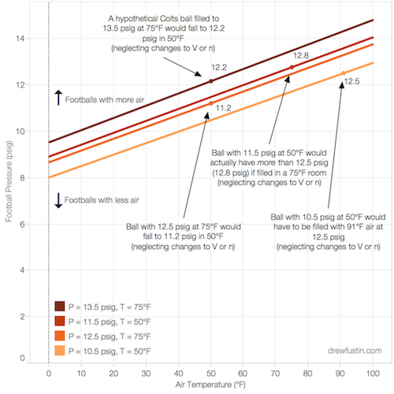
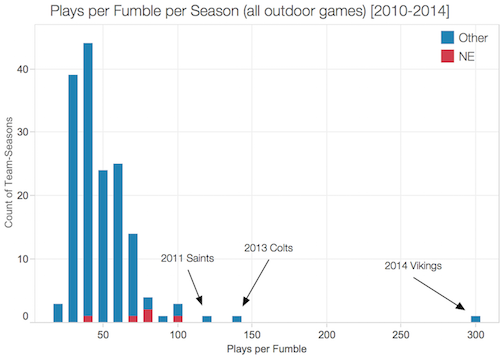

The Physics of Deflategate
I don't think Tom Brady and the Patriots illegally deflated some footballs to win some football games. I think they're just good at football, and this narrative that they cheat makes everyone feel a little better.

Comments on Warren Sharp's Patriots Fumble Analysis
There's been a story going around that the Patriots illegally deflate their footballs, and this has the effect of making them superhuman at ball security. The statistical analyses used to show this outlying fumble rate are flawed. Here's why.